The Site
What the YMCA of Saginaw website looked like at time of testing
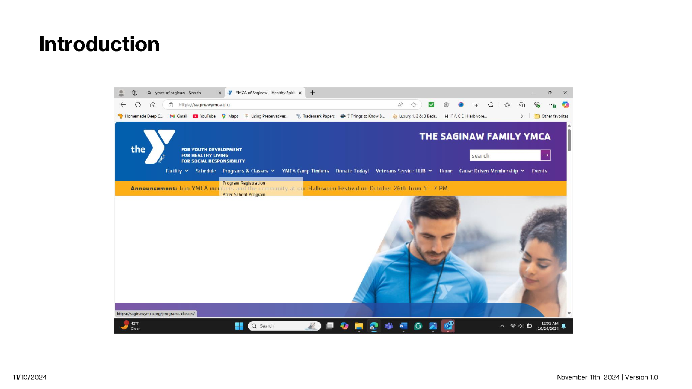
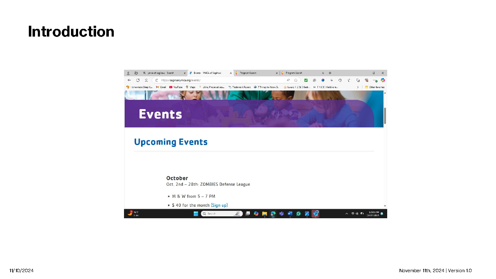
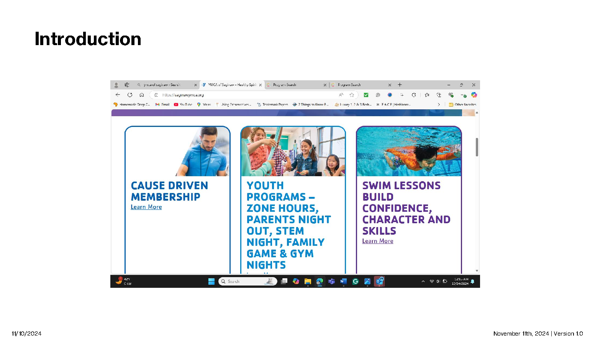
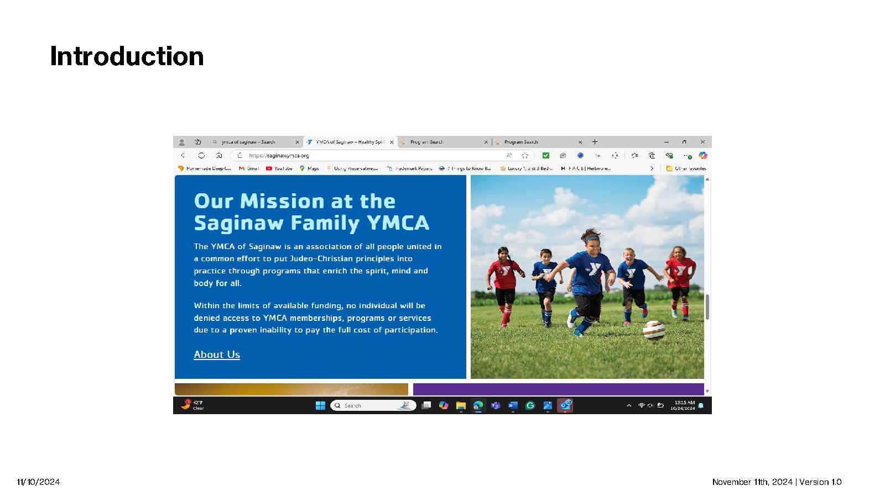
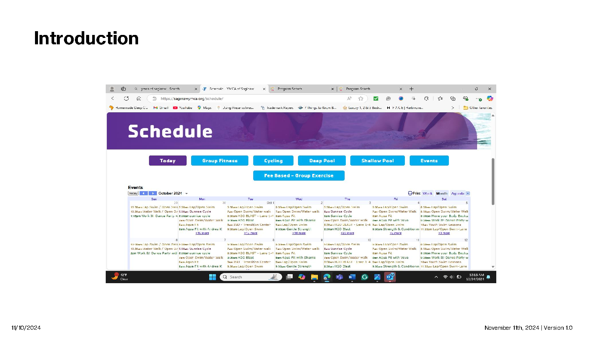
The site supports membership registration, class enrollment, event sign-ups, schedule browsing, facility info, veteran services, and room reservations. Despite its breadth, the information architecture and navigation labeling created significant friction for first-time users attempting the three most common tasks.
Research Approach
Mixed-methods — quantitative metrics paired with qualitative observation
Heuristic Evaluation
Applied Nielsen Norman Group's 10 heuristics across 3–4 sessions. Documented each violation by severity and category.
Cognitive Walkthrough
Step-by-step task analysis using 4 key questions: visibility, recognition, expected effect, and feedback comprehension.
Moderated Testing
Live Zoom sessions with rotating Facilitator / Evaluator / Observer roles. Pre- and post-test questionnaires + ASQ scores.
Join as a Member
"You are not ready to pay — join with a free membership."
60% SuccessRegister for a Class
"Sign up for any Duathlon on Dec 7th."
20% SuccessSign Up for an Event
"Sign up for the Christmas Work It! Dance Party."
100% SuccessKey Findings
Three critical failure patterns across all methods
- 4 of 5 rated Task 1 satisfaction at 4 or below (7-pt ASQ)
- Users re-read the nav multiple times before locating "Join Now"
- Header had double meaning — mission statement and membership entry
- No breadcrumb or dead-end indicators — users felt "stuck in a loop"

It's confusing — I see nothing that quickly lets me purchase a membership.
— Participant 1 · Task 1
- Free "Participant" tier buried at the bottom of a dense membership table
- Event sign-up links rendered as tiny inline hyperlinks within text blocks
- 3 of 5 users missed the Sign Up link — it blended into surrounding content
- Users called the site "unorganized" and "disjointed"
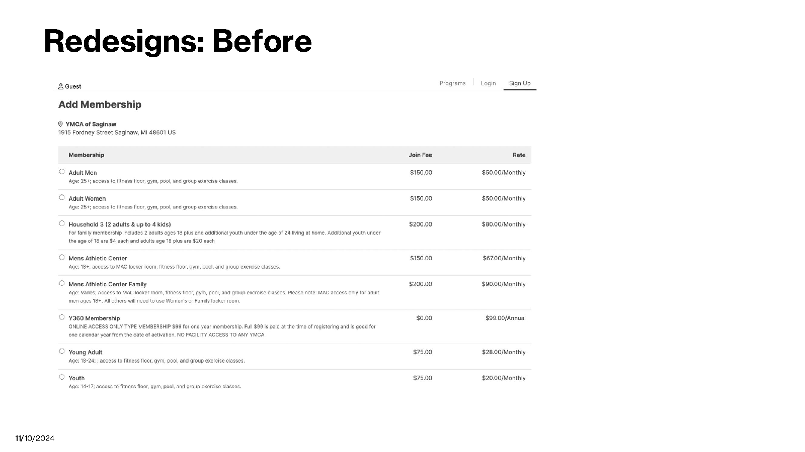
The sign-up link wasn't very clear — it just blended in with everything else.
— Participant 4 · Task 3
- Events page: unstructured chronological text wall, manual scrolling required
- No filter by category, date, or activity type
- Cognitive walkthrough: Task 3 → unexpected login wall with no user feedback
- Class categories misassigned — wrong classes in wrong sections
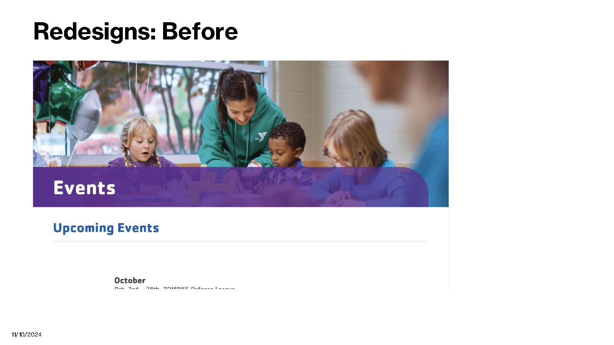
I really wished there was a search function. I didn't like having to scroll — it was information overload.
— Participants 4 & 5 · Task 3
Task Success Results
Pass/fail outcomes across all three test scenarios
Task 1 · Join as a Member
3 of 5 passed. A 60% rate falls below the threshold needed to confirm usability — the task is at risk and requires intervention.
At RiskTask 2 · Register for a Class
4 of 5 failed — multiple errors, incomplete steps, didn't finish in time. The class registration architecture needs a dedicated research sprint.
UnsuccessfulTask 3 · Sign Up for an Event
All 5 passed despite information density issues. The core path was navigable — confirming users were capable and the site's architecture was the problem.
SuccessfulRedesign Direction
Before / after — grounded in observed user behavior
Navigation: "Cause Driven Membership"
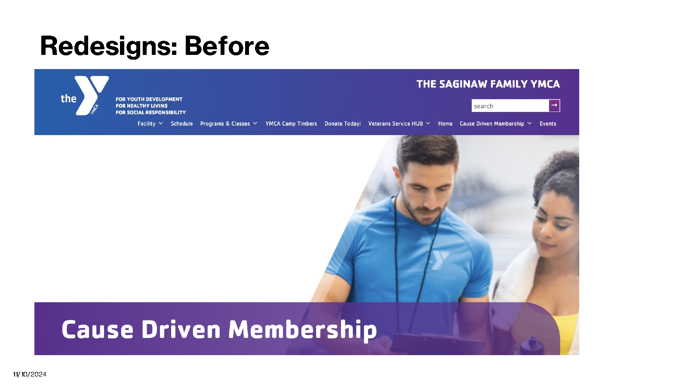
Internal branding language with no meaning for first-time users. 3 of 5 said this path was not where they expected to find membership sign-up.
Persistent "Join Now" CTA
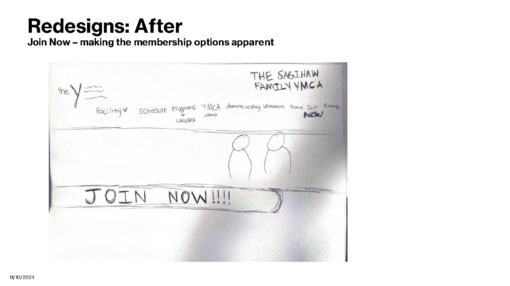
- Rename to "Membership" or surface "Join Now" at top-level nav
- Persistent high-contrast CTA visible at all scroll depths
- Breadcrumbs added to prevent dead-end navigation
Events: Chronological Text Wall

No search, no filters, sign-up links buried inline. 3 of 5 users missed the sign-up link entirely.
Calendar + Search + Prominent CTAs
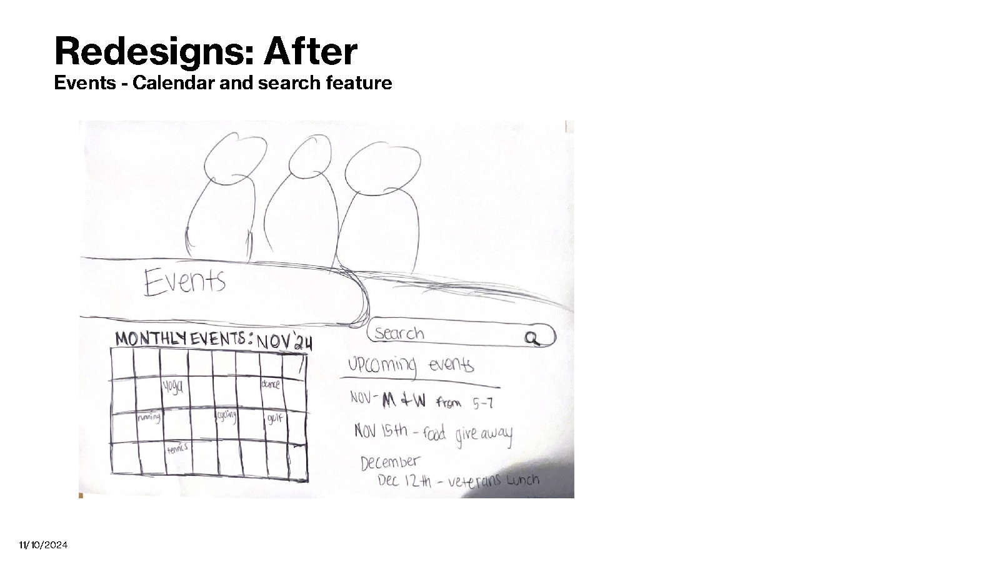
- Keyword search bar at events page header
- Monthly calendar grid view for date-based browsing
- High-contrast Sign Up buttons — not inline text links
Membership: Dense Flat Table

All tiers in one unsorted table. Free "Participant" option sat at the very bottom — most users never scrolled far enough to find it.
Grouped Tiers + Visual Hierarchy
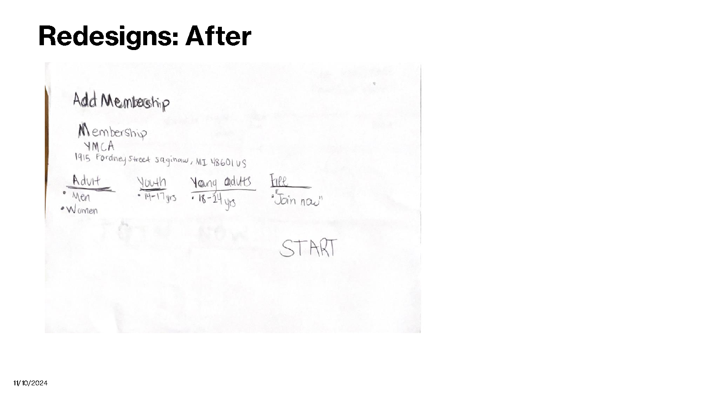
- Group tiers by audience: Adult · Youth · Young Adult · Free
- Prominently feature the free "Participant" tier — don't bury it
- Card layout with fee and rate immediately scannable
Impact & Takeaways
What this project demonstrated about research-driven design
This project reinforced that small labeling decisions compound into significant failure. "Cause Driven Membership" wasn't a minor wording choice — it caused 40% of participants to fail Task 1's first step. Language is architecture.
For an organization dependent on memberships and donations, a 40% failure rate on the join flow represents direct revenue impact — not just a usability problem. Fixing the navigation label and surfacing a persistent CTA is a low-cost, high-impact intervention with measurable conversion implications.
By pairing quantitative outcomes (60% and 20% success rates, ASQ scores) with think-aloud observations, we could pinpoint not just where users failed, but why — enabling targeted recommendations over generic UX suggestions.
Task 3's 100% success despite information density issues was the project's most instructive finding: users were capable — the site's architecture was the problem, not the users.